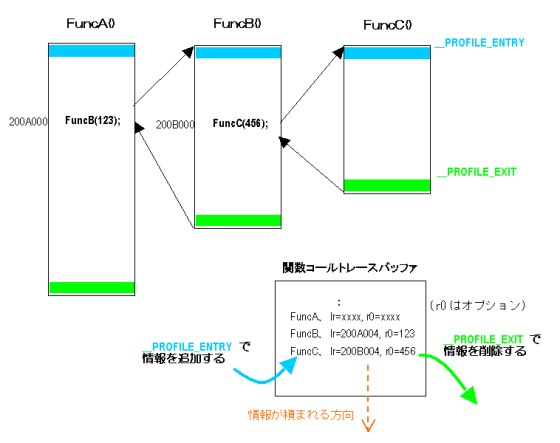

#include <nitro/os.h>void OS_InitCallTrace( void* buf, u32 size, OSCallTraceMode mode );
| buf | 関数コールトレース用バッファ |
| size | 関数コールトレース用バッファサイズ |
| mode | 関数コールトレースのモード |
なし。
関数コールトレースのためのバッファを設定し、関数トレースを開始します。
この関数を呼んで、関数コールトレースの設定がされたあと、トレース状態はEnableになっています。(OS_EnableCallTrace()
を呼んだ状態になっています。)
トレースをされる関数は、profile機能をオンにしてコンパイルされる必要があります。(NITRO_PROFILE を TRUE にしてコンパイルすると コンパイル時に -profile オプションが付き、profile機能がオンになります。) profile機能がオンのコードとそうでないコードが混在している場合、されているものについてのみトレース情報を取得していきます。
また、関数コールトレース関連の機能を有効にするためには、リンク時に libos.CALLTRACE.a (thumb 版なら libos.CALLTRACE.thumb.a ) を含む必要があります。これは make のオプションに NITRO_PROFILE_TYPE=CALLTRACE を指定することにより行ないます。Makefile の中に書いても有効です。ただし最終ROM版(FINALROM)ライブラリでは何も動作を行ないません。
バッファ buf には、先頭部分にトレースのための情報(バッファの最終位置や現在のポインタなど、sizeof(OSCallTraceInfo) - sizeof(OSCallTrace) バイト)が格納され、残りにトレース情報が書き込まれていきます。スレッドシステムを使用している場合、各スレッドでバッファは独立していますので、トレース情報を格納したい場合はそれぞれのスレッドでそれぞれ異なるバッファを定義しなければなりません。
トレースモード mode は記録の方式を指定します。OS_CALLTRACE_STACK が指定されると、profile機能がオンになっている関数の入り口で記録を取り、出口で記録を捨てるという動作を行ないます。こちらをスタックモードと呼びます。mode にOS_CALLTRACE_LOG が指定されると、profile機能がオンになっている関数の入り口で記録を取るだけで出口で記録を捨てる動作を行ないません。これにより、通過した関数を記録していくログモードとしての動作を行わせることが出来ます。
関数が呼び出されたときに格納される情報の大きさは sizeof(OSCallTrace) バイトです。バッファサイズsize については、スタックモードでは、最高n回の関数コールネストが発生する場合は、sizeof(OSCallTraceInfo) - sizeof(OSCallTrace*) + sizeof(OSCallTrace)*n バイトの大きさのバッファが必要ということになります。ログモードではバッファをリング状に使用します。従って先ほどの式の値の大きさのバッファで n 個の記録をつけることが可能です。
より詳細な動作原理について説明します。profile機能がオンになっていると、関数の入り口と出口部分で、それぞれ__PROFILE_ENTRY と__PROFILE_EXIT という関数を呼ぶコードが追加されます。NitroSDK ではこれを利用して、__PROFILE_ENTRY部分で関数に入ったときの情報(戻りアドレスと、オプションで引数)を取得してバッファに積み、__PROFILE_EXIT部分で(スタックモードの場合)最も最近取得した情報を捨てます。ログモードでは__PROFILE_EXIT で情報を捨てません。
下はスタックモード時の動作を説明した図です。

関数コールトレースバッファ内の情報を表示するにはOS_DumpCallTrace() あるいは OS_DumpThreadCallTrace() を呼んでください。
(例)
#define BUFFER_SIZE 0x400
u32 traceBuffer[ BUFFER_SIZE/sizeof(u32) ];
OS_InitCallTrace( traceBuffer, BUFFER_SIZE, OS_CALLTRACE_STACK );
：
：
OS_DumpCallTrace();
OS_DumpCallTrace, OS_DumpThreadCallTrace
2004/06/02 Make オプションの記述変更
2004/05/19 Make オプションについての説明を追加
2004/04/22 スタックモードとログモードの記述を追加
2004/04/13 初版